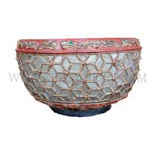
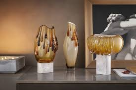
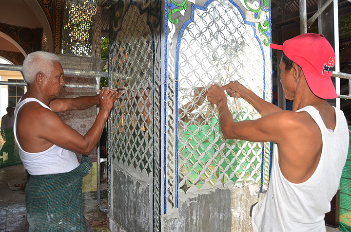
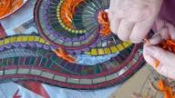
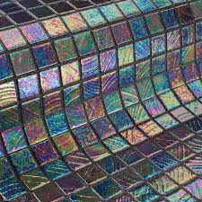
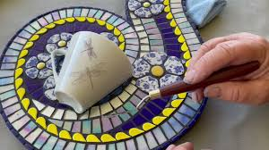
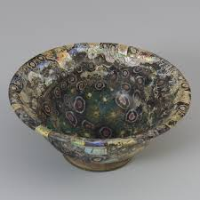
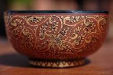

"Glass Mosaic and Gilded Lacquerware" (Hman-zi-shwe-cha)is widely considered the most magnificent and grandest form of Myanmar’s lacquerware traditions. Historically, this exquisite craftsmanship was primarily reserved for royal regalia and sacred religious artifacts. Far more intricate than standard lacquerware, it involves a series of complex, meticulous steps. Below, I will provide a detailed explanation of the traditional techniques used to create these masterpieces.

Glass Mosaic and Gilded Lacquerware is the art of decorating lacquerware or woodenobjects by inlaying glass pieces and applying gold leaf using a mixture called "Thayo" (a paste made of lacquer and ash or sawdust).

The first step involves preparing the base, which is usually made of bamboo or wood. It is coated with multiple layers of raw lacquer and sanded until the surface is perfectly smooth. This stage alone can take several days to complete.

This is the most critical stage of the process:



